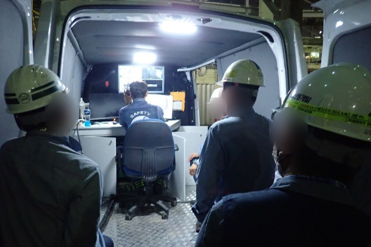

주요 수행 이력
2020~2023년, 4개 발주처와 4년 연속 단가계약을 맺었습니다. 로봇을 투입한 작업과 분야별 실적을 모았습니다.



로봇 투입 작업
로봇이 먼저 들어가 위험 물질을 회수합니다. 작업자는 설비 밖 제어 차량에서 CCTV로 안을 보며 조종하고, 위험이 줄어든 뒤에야 들어가 남은 것을 마무리합니다.
구성로봇 · CCTV · 제어 차량 · 진공흡입차 · 분리장치
로봇 투입이 기록된 작업 2021~2023
- 폐수처리장 유량조정조 슬러지 준설준설·슬러지
- 설비 내부 Cleaning설비 클리닝
- 반응기 로봇 촉매 Unloading촉매·충진물
- Catalyst (ID 1,800)촉매 제거 · Normal
- DrumVessel/Drum Cleaning · Phenol
- WWT Tank (ID 20,000)Tank Cleaning
- Catalyst (ID 1,600)촉매 제거
- Cray Filter (ID 1,800)N2 분위기 · 4회
2023년은 회사소개서(2024), 2021~2022년은 기술소개서(2025) 기준

설비 클리닝
탱크·Pond·배수로 안의 잔류물과 퇴적물을 제거합니다. 위험한 내부에는 흡입 로봇을 먼저 넣고, 작업자는 밖에서 조종합니다.
수행 실적 2020~2023
- Pond Cleaning 단가계약
- 설비 내부 Cleaning로봇 적용
- 위험물 저장탱크 개방검사 Cleaning

촉매·충진물 작업
반응기의 촉매와 충진물을 꺼내고 교체합니다.
수행 실적 2022~2023
- 반응기 로봇 촉매 Unloading로봇 적용
- 건조제 교체
- 흡착제 교체
- 대정비 촉매 교체

준설·슬러지 회수
하수관과 처리시설의 퇴적물을 준설하고 슬러지를 회수합니다.
수행 실적 2020~2023
- 준설작업 단가계약
- 폐수처리장 유량조정조 슬러지 준설로봇 적용
- 공정 내 배수로 슬러지 준설


사진은 분야별 작업 장면과 장비이며, 목록에 적힌 실적의 현장을 찍은 것은 아닙니다.